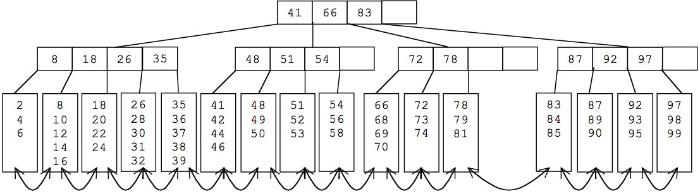

B+树与B*树

1. B+树
1.1. B+树简介
B+树是一种树数据结构，是一个n叉树，每个节点通常有多个孩子，一棵B+树包含根节点、内部节点和叶子节点。根节点可能是一个叶子节点，也可能是一个包含两个或两个以上孩子节点的节点。
1.2. B+树应用场景
B+树通常用于数据库和操作系统的文件系统中。NTFS, ReiserFS, NSS, XFS, JFS, ReFS 和BFS等文件系统都在使用B+树作为元数据索引。B+树的特点是能够保持数据稳定有序，其插入与修改拥有较稳定的对数时间复杂度。B+树元素自底向上插入。
1.3. B+树定义
- B+树是应文件系统所需而出的一种B树的变型树。一棵m阶的B+树和m阶的B树的差异在于：
- 有n棵子树的结点中含有n个关键字，每个关键字不保存数据，只用来索引，所有数据都保存在叶子节点。
- 所有的叶子结点中包含了全部关键字的信息，及指向含这些关键字记录的指针，且叶子结点本身依关键字的大小自小而大顺序链接。
- 所有的非终端结点可以看成是索引部分，结点中仅含其子树（根结点）中的最大（或最小）关键字。
备注：通常在B+树上有两个头指针，一个指向根结点，一个指向关键字最小的叶子结点。
- B+树是B树的变体，也是一种多路搜索树，其定义除以下存有差异的定义外基本与B树同：
- 非叶子结点的子树指针与关键字个数相同；
- 非叶子结点的子树指针P[i]，指向关键字值属于[K[i], K[i+1])的子树（B树是开区间）；
- 为所有叶子结点增加一个链指针；
- 所有关键字都在叶子结点出现；

备注：B+的搜索与B树也基本相同，区别是B+树只有达到叶子结点才命中（B树可以在非叶子结点命中），其性能也等价于在关键字全集做一次二分查找；
1.4. B+的特性
- 所有关键字都出现在叶子结点的链表中（稠密索引），且链表中的关键字恰好是有序的；
- 不可能在非叶子结点命中；
- 非叶子结点相当于是叶子结点的索引（稀疏索引），叶子结点相当于是存储（关键字）数据的数据层；
- 更适合文件索引系统；
2. B*树

2.1. B*树的定义
- 是B+树的变体，在B+树的非根和非叶子结点再增加指向兄弟的指针；
- B*树定义了非叶子结点关键字个数至少为(2/3)*M，即块的最低使用率为2/3（代替B+树的1/2）；
3. B树，B+树，B*树小结
| 数据结构 | 小结 |
|---|---|
| B树 | 多路搜索树，每个结点存储M/2到M个关键字，非叶子结点存储指向关键字范围的子结点；所有关键字在整颗树中出现，且只出现一次，非叶子结点可以命中； |
| B+树 | 在B树基础上，为叶子结点增加链表指针，所有关键字都在叶子结点中出现，非叶子结点作为叶子结点的索引；B+树总是到叶子结点才命中； |
| B*树 | 在B+树基础上，为非叶子结点也增加链表指针，将结点的最低利用率从1/2提高到2/3； |
4. B树，B+树与B*树的优缺点比较
备注：B-树就是B树，”-“是个连字符号，不是减号。
4.1. B树 vs B+树
- B树是一种平衡的多路查找(又称排序)树，在文件系统中有所应用。主要用作文件的索引。其中的B就表示平衡(Balance)
- B+树有一个最大的好处，方便扫库，B树必须用中序遍历的方法按序扫库，而B+树直接从叶子结点挨个扫一遍就完了。
- B+树支持range-query(区间查询)非常方便，而B树不支持。这是数据库选用B+树的最主要原因。比如要查 5-10之间的，B+树一把到5这个标记，再一把到10，然后串起来就行了，B树就非常麻烦。B树的好处，就是成功查询特别有利，因为树的高度总体要比B+树矮。不成功的情况下，B树也比B+树稍稍占一点点便宜。
- B树的优势是当你要查找的值恰好处在一个非叶子节点时，查找到该节点就会成功并结束查询，而B+树由于非叶节点只是索引部分，这些节点中只含有其子树中的最大(或最小)关键字，当非终端节点上的关键字等于给点值时，查找并不终止，而是继续向下直到叶子节点。因此在B+树中，无论查找成功与否，都是走了一条从根到叶子节点的路径。有很多基于频率的搜索是选用B树，越频繁query的结点越往根上走，前提是需要对query做统计，而且要对key做一些变化。
- 另外B树也好B+树也好，根或者上面几层因为被反复query，所以这几块基本都在内存中，不会出现读磁盘IO，一般已启动的时候，就会主动换入内存。 mysql底层存储是用B+树实现的，因为内存中B+树是没有优势的，但是一到磁盘，B+树的威力就出来了。
4.2. B+树 vs B*树
- B*树是B+树的变体，在B+树的非根和非叶子结点再增加指向兄弟的指针；B树定义了非叶子结点关键字个数至少为(2/3)M，即块的最低使用率为2/3（代替B+树的1/2）；
- B+树的分裂：当一个结点满时，分配一个新的结点，并将原结点中1/2的数据复制到新结点，最后在父结点中增加新结点的指针；B+树的分裂只影响原结点和父结点，而不会影响兄弟结点，所以它不需要指向兄弟的指针；
- B*树的分裂：当一个结点满时，如果它的下一个兄弟结点未满，那么将一部分数据移到兄弟结点中，再在原结点插入关键字，最后修改父结点中兄弟结点的关键字（因为兄弟结点的关键字范围改变了）；如果兄弟也满了，则在原结点与兄弟结点之间增加新结点，并各复制1/3的数据到新结点，最后在父结点增加新结点的指针； 所以，B*树分配新结点的概率比B+树要低，空间使用率更高；
5. 参考文档
相关文章